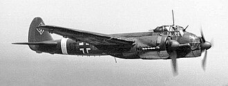

| Spesifikasi | Detail |
|---|---|
| Jenis | Pesawat Pengintai Jarak Jauh |
| Awak | 3-4 orang (Pilot, Navigator/Pembom, Operator Radio/Penembak Belakang, terkadang Insinyur Penerbangan) |
| Panjang | 14,36 m |
| Lebar Sayap | 20,08 m |
| Tinggi | 4,85 m |
| Berat Kosong | Sekitar 9.860 kg |
| Berat Lepas Landas Maksimum | Sekitar 14.000 kg |
| Mesin | Dua x Junkers Jumo 211 J-1 atau Jumo 211 N |
| Tenaga Mesin | 2 x 1.420 PS (1.044 kW) |
| Kecepatan Maksimum | Sekitar 470 km/jam pada ketinggian 5.300 m |
| Jarak Jelajah | Sekitar 2.265 km |
| Plafon Terbang | Sekitar 8.200 m |
| Persenjataan | Biasanya 1 atau 2 x 7,92 mm MG 15 atau MG 81 senapan mesin fleksibel di posisi belakang atas dan/atau bawah untuk pertahanan |
| Kamera | Berbagai konfigurasi kamera untuk pengintaian udara, seringkali termasuk Rb 50/30, Rb 75/30, atau Rb 20/30 |
| Produksi | Ju 88 memiliki banyak varian, D-1 adalah salah satu model pengintai awal. Jumlah produksi spesifik untuk D-1 tidak selalu mudah dipisahkan dari total produksi Ju 88. |